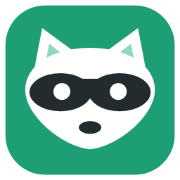
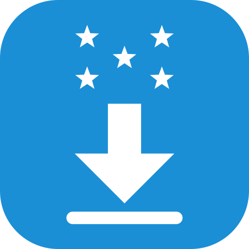
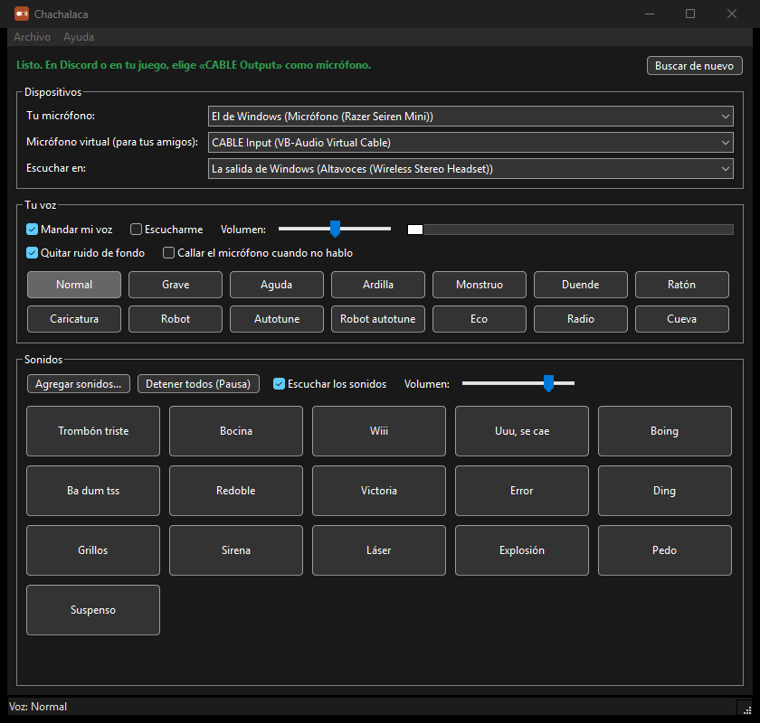

Atarraya
Gestor de descargas · Windows 10 y 11 (64 bits)
Baja cada archivo en varias partes a la vez, también torrents, videos de las páginas y las descargas de tu navegador.
Hecho en Honduras · Código abierto
Juntamos en un solo lugar los programas básicos para tu PC: gratis, sin publicidad, sin virus y sin recoger tus datos. Todo el código está en GitHub para que cualquiera lo revise.
Todos necesitamos alguna vez un programa gratis: para descomprimir un archivo, bajar algo, abrir un documento o arreglar la PC. Muchas veces lo que se encuentra trae anuncios, virus o pide una suscripción.
Nuestra misión es juntar en un solo lugar los programas básicos que la gente necesita, gratis y con el código libre en GitHub. Si la gente apoya, algún día podremos vivir de esto. Y si no, nuestros aportes quedan aquí igual, para quien los necesite.
Antes de abrir un programa: Windows puede decir «Windows protegió su PC». Es normal: los programas son nuevos y todavía no tienen firma digital (un sello de pago que Windows reconoce). Pulsa «Más información» y luego «Ejecutar de todas formas».
Si Windows tiene activado el «Control inteligente de aplicaciones», puede bloquear el programa sin darte la opción de abrirlo igual. Cada página de programa lo explica. Estamos preparando la firma digital para que esto deje de pasar.
Para estar seguro de que lo que bajaste es el original, cada versión trae su huella (SHA-256). ¿Qué es eso?
Gestor de descargas · Windows 10 y 11 (64 bits)
Baja cada archivo en varias partes a la vez, también torrents, videos de las páginas y las descargas de tu navegador.

Descompresor · Windows 10 y 11 (64 bits)
Abre ZIP, RAR, 7z y más, también con contraseña y en varias partes.

Espacio en disco y limpieza · Windows 10 y 11 (64 bits)
Te muestra qué ocupa tu disco y limpia lo que sobra, siempre con tu permiso.
Revisa tu PC · Windows 10 y 11 (64 bits)
Revisa tu PC y te dice, en palabras simples, qué le pasa y cómo arreglarlo.
Bloqueador de anuncios · Chrome, Edge y Brave
Bloquea anuncios y rastreadores en Chrome, Edge y Brave. No manda tus datos a ningún lado.

BitTorrent · Windows 10 y 11 (64 bits)
Un cliente de BitTorrent liviano y en español, sin anuncios ni programas extra.
Sonidos y cambio de voz · Windows 10 y 11 (64 bits)
Pone sonidos en tu micrófono y te cambia la voz en vivo, para Discord y los juegos.
Mods y guías hechos por nosotros, en español. No volvemos a subir archivos de otros sitios: te decimos dónde bajarlos de su página oficial y damos crédito a sus autores. Nada de esto sirve para saltarse los sistemas anti-trampas de los juegos en línea.
Mod para Hollow Knight: Silksong · beta
Un minimapa para jugar Silksong en cooperativo: ves a tu compañero en el mapa, te avisa cuando cae y te marca a dónde ir.
Programa de otros · para juegos de un jugador · Windows
Cheat Engine cambia valores de un juego mientras lo juegas (vidas, dinero, tiempo). No es nuestro: lo explicamos porque mucha gente lo busca y su instalador trae sorpresas.

29 de octubre de 2026
Nuestro programa nuevo pone sonidos en tu micrófono y te cambia la voz en Discord y en los juegos con chat de voz: robot, ardilla, monstruo, eco y más. También quita el ruido de fondo. Gratis, en español y sin publicidad. Trae VB-CABLE, de VB-Audio (donationware).
DescargarNo son nuestros, pero los recomendamos: son gratis, sin trampas y de código abierto. Bájalos siempre de su página oficial.
¿Algo no funciona? Cada programa tiene su botón «Reportar un problema». Para ideas, preguntas o comentarios generales, usa las discusiones de GitHub. Se entra con una cuenta gratis.
Moderamos los comentarios: los insultos, el spam y los enlaces engañosos se ocultan solos. No pongas datos personales: los comentarios son públicos.
Todo lo que hacemos es gratis. Si te sirve, puedes ayudarnos a seguir con una donación por PayPal. Cualquier monto ayuda, y recomendarnos también.